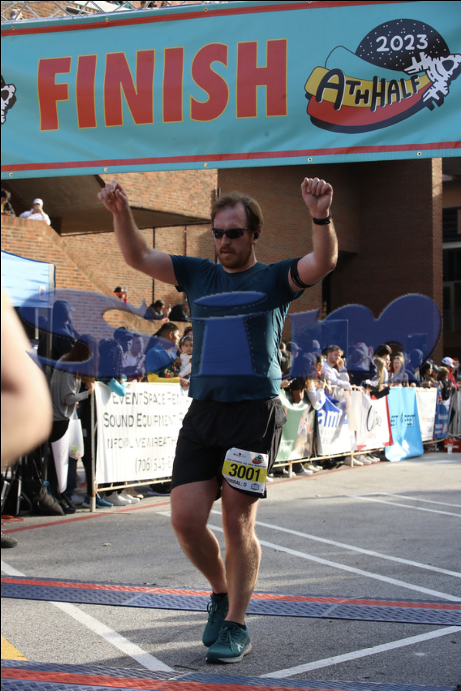
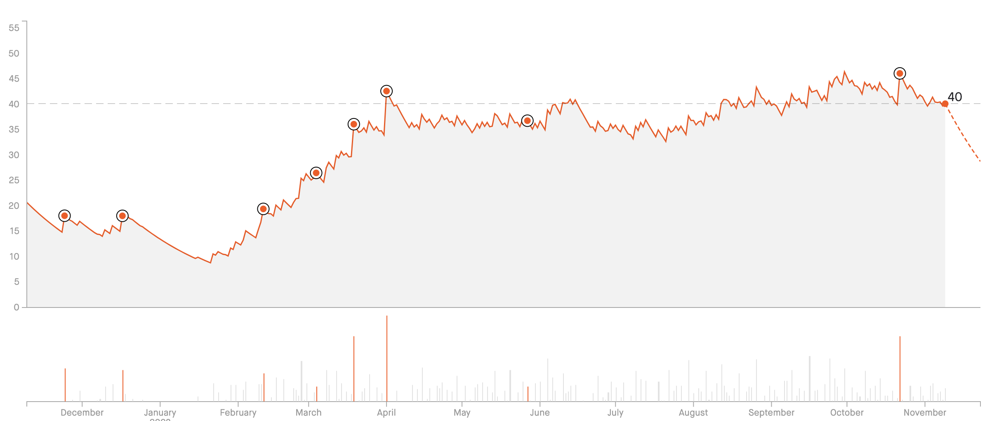
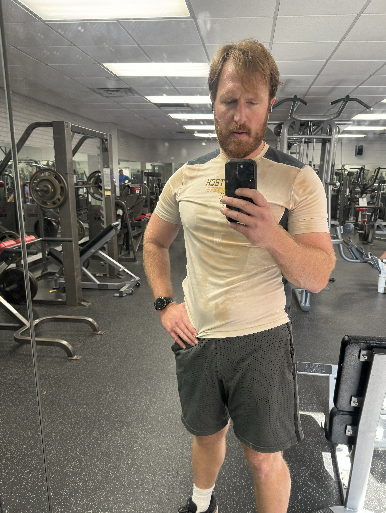

Content warning: discussions of body image, eating habits, diet culture, and long COVID. Also, language.
It has been a very long road back from long COVID.
I can vividly remember where I was a year ago: in the depths of burnout, taking naps almost every day just to get by; weekly migraines; running in place yet accomplishing nothing; maybe getting in a few miles of running per week, and years since I could string together more than about 10 push-ups at once.
And then COVID hit, and even though the active infection was relatively mild, some symptoms stuck around for months after: exercise-induced asthma and sleep apnea being the two most disruptive and frustrating. When I started running again in late January, every single outing was, frankly, infuriating: the first couple miles were agonizing. My lungs wouldn’t open; it felt like drowning. My heart would race. And by the time my lungs finally opened up, I was usually exhausted by then anyway. The Savannah Women’s Half in April rolled around, and even though I finished, it was a 1-minute improvement over the previous October’s Ath Half.
Six months, 1-minute improvement, for my second-slowest half marathon time ever.
This was also when I started seeing a specialist for my breathing. I experienced a brief reprieve in January from the migraines that had been plaguing me for the past several months—burnout recovery!—but they started back up again in late January and through all of February before I realized they were due to my other new long COVID symptom, sleep apnea; an at-home sleep study later confirmed it.
Additionally, I started seeing a dietician. Not an influencer or “lifestyle coach”, someone with an actual fucking degree in nutrition—and someone who came recommended for athletes. I figured if I really wanted to manage these symptoms, I was going to need to hit them from every angle: medical interventions, dietary changes, and a regular workout regimen.
- The medical interventions front has been, by far, the most disappointing. Despite seeing highly recommended pulomnary and sleep specialists, their treatment options have been severely limited by insurance companies refusing to reimburse them. I’ve also been disappointed by their unwillingness to “work the system”, forcing me to advocate for myself despite seeking these people out specifically because I lack specialist knowledge. I’ve had to rely on data from a pulse oximeter I purchased myself to monitor and adjust my nighttime sleep habits, and have incorporated my own series of stretches and pre-run exercises to open up my lungs. It’s all helped, but it’s been in spite of seeing a specialist rather than because of it. tl;dr welcome to healthcare in America.
- The dietician, conversely, has been an incredible success. We instantly found an amazing rapport and have had monthly check-ups since to evaluate how things have been going to make tweaks as needed. She helped identify how lacking my protein intake was and gave me lots of options for increasing it, many of which my wife and I have seamlessly integrated. She’s also helped improve my fueling before runs and workouts, and best of all she soundly rejects diet culture which I deeply appreciate. Restriction simply doesn’t work; instead, we found a menu rotation that is working for me, and for everything else I try to approach it with mindfulness and intention (that helps a lot with the “oops I just ate an entire bag of chips while standing over my sink” incidents).
- The physical exercise has also been incredibly successful, though it took a long time and was probably the most consistently frustrating. Exercise takes time and extended commitment, neither of which I had much of in April when work ate up a lot of my energy and every run was guaranteed to start with 15-20 minutes of simulated drowning. But around this time my wife and I started regularly incorporating 2x/week weightlifting sessions, the first time either of us had even entered a weightroom in years, to say nothing of multiple sessions each week. By August I’d added a third weekly session for my own areas of focus, and by September I was experimenting with a fourth (though that was very, very difficult to maintain consistently and so would tend to be “schedule permitting”). It took a LOT of intentional planning—and commitment to saying “no!”—to guard and protect my 3x/week weightlifting sessions AND 4x/week runs.
Strava was able to see the consistency, starting in April.

It’s taken a long time, but:
- I stopped wearing my pulse oximeter back in August and haven’t had sleep apnea episodes since July.
- The migraines also disappeared entirely around July.
- By July, I’d started clocking longer runs than any in the previous 3 years.
- In August, I could run 9 miles without walking.
- In September, I could run 12 miles without walking, and at a faster pace than I ran 9 back in August.
- Also in September, I could bench press multiple reps of over 200lbs in the middle of a larger superset.
- In October, I ran Ath Half. While technically it is now my third-slowest half marathon time, I beat my April Savannah Women’s Half time by 18 minutes.
I was deep in the middle of one of my longest weight sessions in years when I took this picture.

Normally, I hate photos like this. Further, I don’t particularly like how I look. But I wanted to take this picture because, in the moment, I felt strong and powerful, sentiments I hadn’t felt toward myself in quite some time. It was one of the first times in years where I felt like I actually belonged in the weight room. I’ve only just started feeling like I belong with the other local runners, too.
I still have bad days. My breath still occasionally catches and, for a moment, my lungs feel like they’re closing back up; maybe it’s some last vestiges of long COVID, maybe I inhaled some pollutant in the air (plenty to choose from), or maybe it’s in my head. I still get headaches that knock out entire swathes of a given day, though now they’re almost exclusively because of burnout recovery (a very “two steps forward, one step back” process), rather than apnea. Some days I just… push myself too hard, too fast, and I need to back off. My recovery periods are still longer than they used to be—whether this is long COVID related, burnout related, age related, or some combination of all of the above, I don’t know. I still get frustrated with how much slower I still am running than I used to be, in spite of the incredible progress I’ve made over the past 6 months. I still eat tortilla chips straight out of the bag while standing over the sink. I still look at my body in the mirror and critique it.
But even if I don’t get back to running 1:40 half marathons, I’m already back to sub-10 minute/mile half marathons. I’m already back to benching 220lbs. I’m consistently running 20+ miles/week. I’ve run almost 700 miles this year (on track for 800+!), complete with my first 100-mile month in years, after running 308 and 377 miles in each of the last two years. I’m stronger and healthier and happier than I’ve been in such a long time, and I’m so, so grateful for it.
Citation
@online{quinn2023,
author = {Quinn, Shannon},
title = {Rebuilding},
date = {2023-11-09},
url = {https://magsol.github.io/2023-11-09-rebuilding},
langid = {en}
}